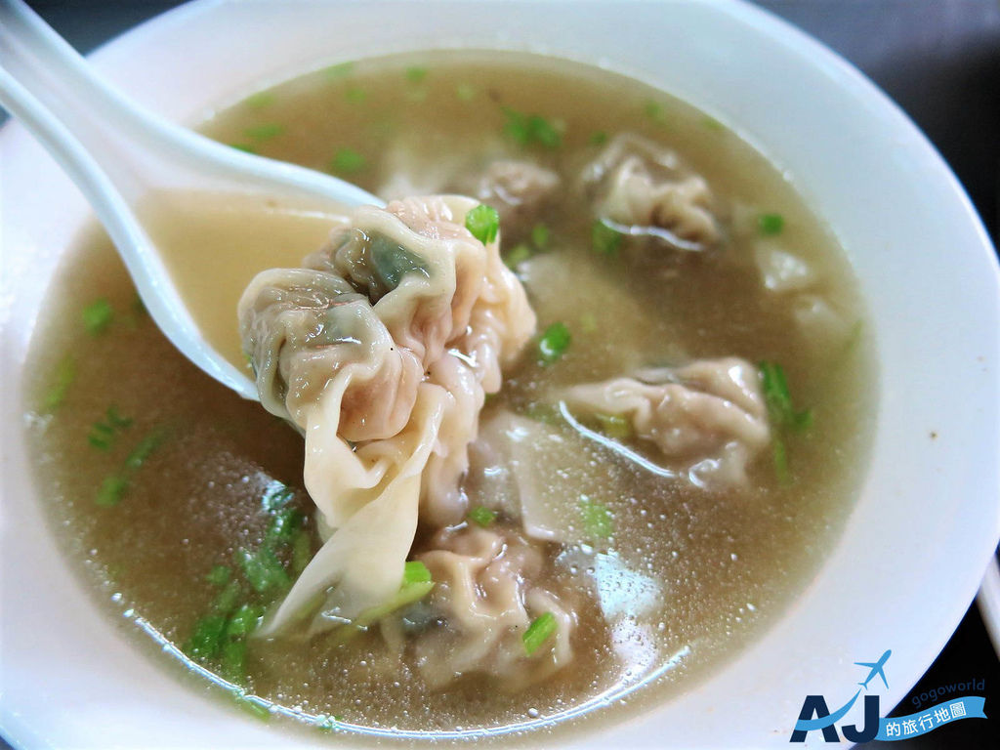

萬巒豬腳
說到萬巒豬腳就要提起林海鴻先生，台灣光復初年在萬巒鄉做生意，原本在萬巒市場內擺麵攤，之後創立海鴻食堂改賣豬腳，
自從先總統蔣經國先生來訪，品嘗後很美味推薦就名聞全國，形成現在萬巒特有的豬腳街
里港餛飩

用米漿製成的粿，因不同的族群和區域，吃法有所不同。純米製作的粿，加入蝦猴、香腸、肉片之後，搖身一變成為東港著名小吃肉粿。
走在東港熱鬧街頭，就有數家肉粿店，肉粿在當地儼然成為在地人的早餐，也因為大家口耳相傳，肉粿後來成為來東港旅遊，必吃小吃之一。
東港肉粿
吃過肉粿的朋友都知道，白色的粿是用米磨成米漿再炊煮而成，配上東港特產櫻花蝦或蝦猴、香腸、三層肉，調配而成的肉粿，不僅很有特色，
也代表著東港特有的美食小吃。 東港肉粿的由來似乎不可考，推測應該和當地飲食再結合特產所衍生出來的小吃文化有關，經過時間一傳十，
十傳百之下成為當地東港平民小吃。
黑鮪魚
屏東縣好山好水，擁有珍貴的海洋資源及豐富的人文氣息。 東港居民多以漁產事業為主，尤以鮪魚為大宗，其中以黑鮪魚最為極品，黑鮪魚俗名「黑甕串」，
其漁汛期約為四月中至七月，屬高度洄游種群，其口感細緻甘甜入口即化，居鮪類生魚片之冠，並與櫻花蝦及油魚子列為東港三寶，造就鎮民可觀之財富。